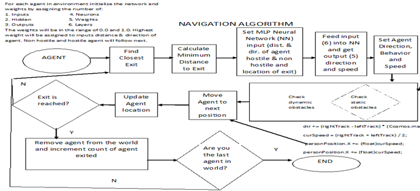
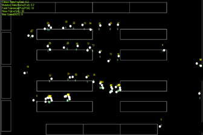
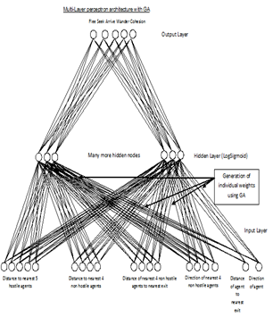
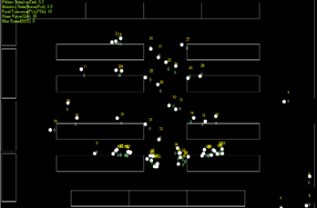

|
Using Genetic Algorithim and Neural Network for learning and adaptive behavior in a goal finding application
Students: James Stigall
Past Students: Tatwamasi Tripathy, Taiysha Hobbs,Kola Ogunlana
Status: Current
The goal of this project is combining Genetic Algorithm (GA) with Neural Networks (NN) to explore how intelligent agents can look for exits during an evacuation. The agents have the capability to adapt their behavior in the environment and formulate their response by learning from the environment. Our approach focuses on modeling individual behavior as well as group behavior. Individuals constantly adjust their behavior according to the dynamic factors in the environment. We have developed crowd-modeling and emergency behavior modeling capability in a goal finding application using C#. This project examines an intelligent agent-based evacuation that can help plan emergency evacuations, run numerous event-driven evacuation scenarios, support research in the areas of human behavior, and model the movement of responders and security personnel. The adaptive behavior focuses on the individual agents changing their behavior in the environment. The collective behavior of the agent focuses on the crowd-modeling and emergency behavior in the goal finding application. We have developed a new intelligent agent based characteristics such as autonomy, social ability, cooperativeness, and learning ability which define their final behavior when trying to reach a goal. Our contributions lies in our approach of combining Genetic Algorithm (GA) and Neural Network (NN) to model learning and adaptive behavior of agents in a goal finding application. The proposed application will aid in running multiple evacuation drills for what if scenarios by incorporating agent characteristics. |
| |
 |
 |
| |
A hierarchy of behaviors and neural network design |
An Agent moving towards the goal |
In our proposed goal finding application, the agents are classified in two types as shown in above figure: 1) Steering Agent 2)
Intelligent Agent. We have built a goal finding application using C# for crowd movement where the agents are shown in different colors. When the simulation starts the agents have an assigned initial goal. Some of these agents have a secondary goal that leads them to group together as they move towards the goal. |
| |
 |
 |
| |
Path following behavior |
Intelligent agents going towards the goal |
| |
|
|
The key aspect of agent based modeling lies in understanding the mechanism by which autonomous agents interact among themselves. Our hypothesis is that people with similar background, race, ethnicity, sex etc are more likely to collaborate together and exhibit close affinity in emergency than people with varied background. Agents come from different background with the capability to adapt their behavior under different environment and formulate their response by learning from the environment. The agents have characteristics such as:
- Attributes: An agent is a discrete individual and has mass, position, velocity, force, and speed.
- Emotions: An agent has emotions such as level of panic and stress attributes.
- Memory: The agents are goal oriented. The agents have a list of goals that constantly keeps increasing or decreasing depending upon its interaction with the environment.
- Rules of behavior: An agent has the ability to learn and adapt its behaviors based on experience in the environment using genetic algorithm and neural network.
- Decision making capability: An agent is autonomous and can function independently in its environment while interacting with other agents (dynamic obstacles) and environment (static obstacles).
Our proposed multi agent system models human behavior. The agent characteristics include attributes, emotions, memory, rules of behavior and learning, and decision making capabilities. Our proposed multi agent system also uses MLP (refer fig. below) and consists of variables which provide a way to keep existing state as it moves thereby relying on the stimulus it receives from the world.
|  |
 |
| Multi Perceptron Network |
Agents evacuating in a multi-agent system |
Our proposed C# application can be used to model situations that are difficult to test in real-life due to safety considerations. It is able to include agent characteristics and behaviors. The findings of this modeling are very encouraging as the agents are able to assume various roles to combine GA and NN on the way to reaching their goals.
We are currently integrating fuzzy logic to model stress, panic, and the uncertainty of emotions. The findings of this modeling are very encouraging as the agents are able to assume various roles to utilize fuzzy logic on the way to reaching their goals. The fuzzy rules link the parts together while feeding into behavioral rules.
Publications
- Sharma, S., Ogunlana, K.,P., Scribner, P., Grynovicki, "Modeling human behavior during emergency evacuation using intelligent agents: A multi-agent simulation approach", Springer special issue of Information Systems Frontiers on Disaster Management and Information Systems, DOI: 10.1007/s10796-017-9791-x, ISSN 1387-3326, Page 1-17, 2017. [http://rdcu.be/vjtS]
- Sharma, S., Ogunlana, K., Sree, S.," Modeling and Simulation of Evacuation Behavior using Fuzzy Logic in a Goal Finding Application", proceedings of SPIE conference on Defense and Security, Baltimore, MD, USA, http://dx.doi.org/10.1117/12.2220598, 17-21 April, 2016.
- Sharma, S., and Ogunlana, K., "Modeling Learning Behavior in a Multi-Agent System using GA & NN during Evacuation", Proceedings at the ISCA 30th International Conference on Computers and their Applications (CATA 2015), Honolulu, Hawaii, USA, March 9-11, 2015.
- Sharma, S., and Ogunlana, K., "Using Genetic Algorithm & Neural Network for modeling learning behavior in a Multi-Agent System during Emergency Evacuation", International Journal of Computers and their Applications, IJCA,Vol. 22, No. 4, page 172-182, Dec. 2015.
- Sharma, S., and Ogunlana, K., "Modeling Learning Behavior in a Multi-Agent System using GA & NN during Evacuation", Proceedings at the ISCA 30th International Conference on Computers and their Applications (CATA 2015), Honolulu, Hawaii, USA, March 9-11, 2015.
- Ogunlana, K., Sharma, S., "Agent based Simulation model for data visualization during evacuation", proceedings of 2014IEEE/ ASE BIGDATA Conference, ISBN: 978-1-62561-000-3, page 1-6, Stanford University, May 27-31, 2014.
- Sharma, S., and Ogunlana, K., "Using Genetic Algorithm and Neural Networks in a Goal Finding Application for Evacuation", Proceedings at the ISCA 22nd International Conference on Software Engineering and Data Engineering (SEDE-2013), Los Angeles, California, USA, page 25-30, Sep 25 – 27, 2013.
- Sharma, S., “Use of Favorite Goal in Agent Based Modeling and Simulation”, International Journal of Computers and their Applications, IJCA, Vol. 19, No. 1, March 2012.
- Sharma, S., Otunba,S.,and Ogunlana, K. , Tripathy, T., "Intelligent Agents in a Goal Finding Application for Homeland Security", Proceedings of IEEE, SoutheastCon 2012, Orlando, Florida, USA, page 1-5, March 14-17, 2012.
- Sharma, S., “Military route planning in battle field simulations for a multi-agent system”, Journal of Computational Methods in Science and Engineering, Volume 10, No.1,2, page. S97-S105, ISSN: 1472-7978, 2010.
- Sharma, S., “Fuzzy approach for predicting probability of reaching a target in a battlefield environment”, International Journal of Computers and their Applications, IJCA, Vol. 17, No. 1, March 2010.
- Sharma, S., “Avatarsim: A multi-agent system for emergency evacuation simulation”, Journal of Computational Methods in Science and Engineering, Volume 9, No. 1,2, page S13-S22, ISSN 1472-7978, 2009.
- Sharma, S., Singh, H., Prakash, A., “Multi-agent modeling and simulation of human behavior in aircraft evacuations”, IEEE Transactions on Aerospace and Electronic Systems, Vol.44, No.4, October 2008.
 VR LABORATORY (C) 2007-2018, ALL RIGHTS RESERVED
VR LABORATORY (C) 2007-2018, ALL RIGHTS RESERVED |

{kind=link}
{kind=link}
{kind=link}
{kind=link}
{kind=link}
{kind=link}
{kind=link}